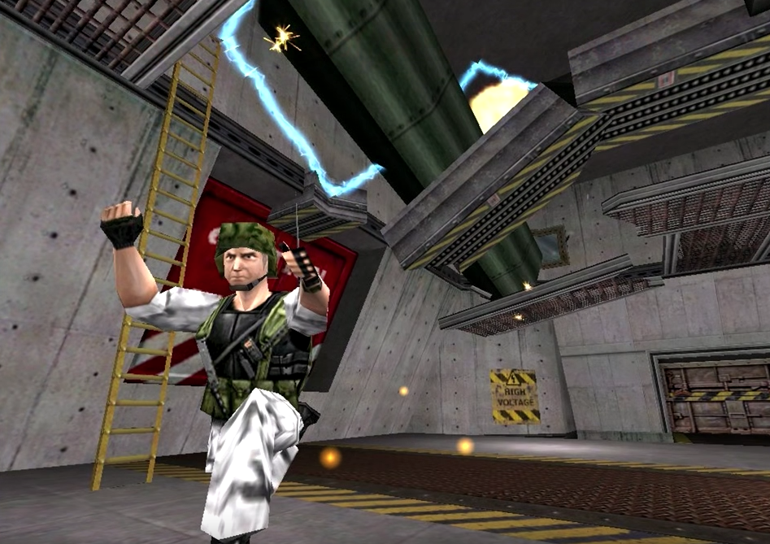
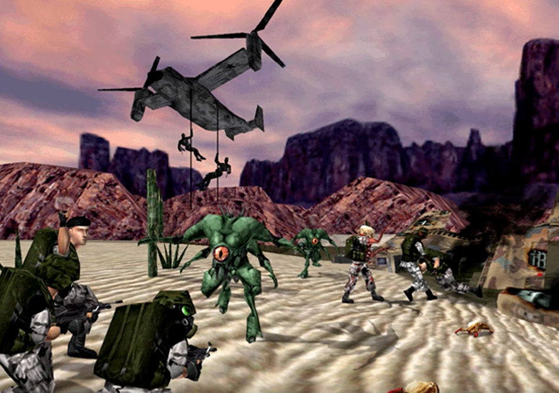
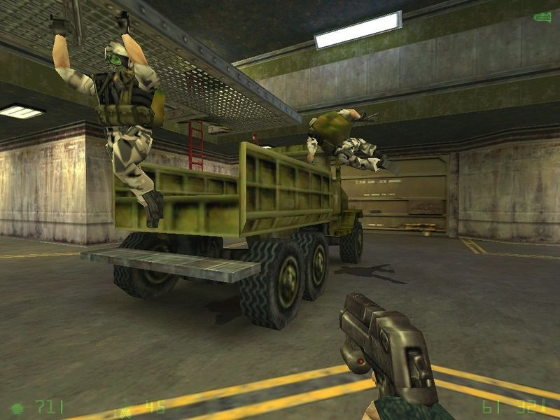
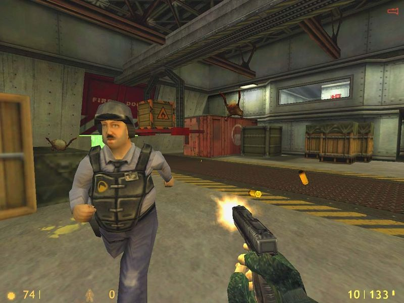
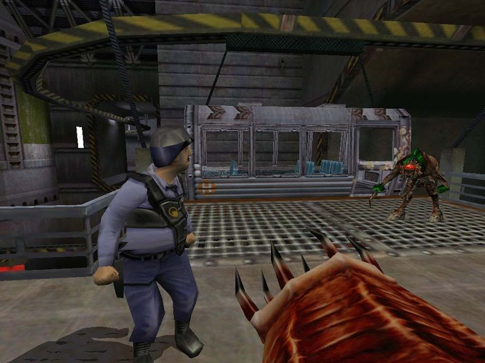

A few images from early (cut) versions of Half-Life: Opposing Force
Some interesting things to note:
- Adrian Shephard didn’t wear a mask - [beta] face reveal!
- Shock Troopers could control the minds of Pit Drones via a metal plate on their head (see above)
- Half-Life-style grunt models were used in some scenes (likely as placeholders)
- The room where you had to jump over toxic waste using a cargo trolley didn’t have toxic waste (run Otis run)
- Shock Troopers were dark green, and Shock Roaches had white spikes
- It seems that you received the Barnacle early on in the game (although not confirmed)
- Engineers had full Gordon-style beards!
Check out this video by Vect0R to see footage of this stuff. Also credit to Combine Overwiki for some of the images.